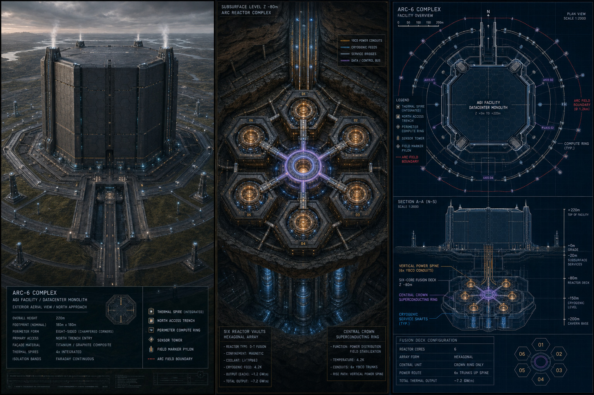
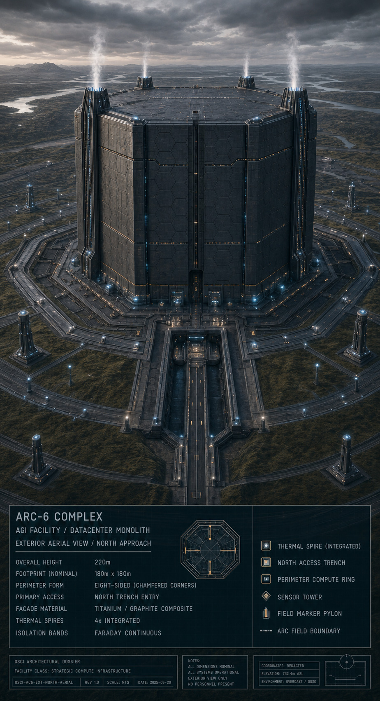
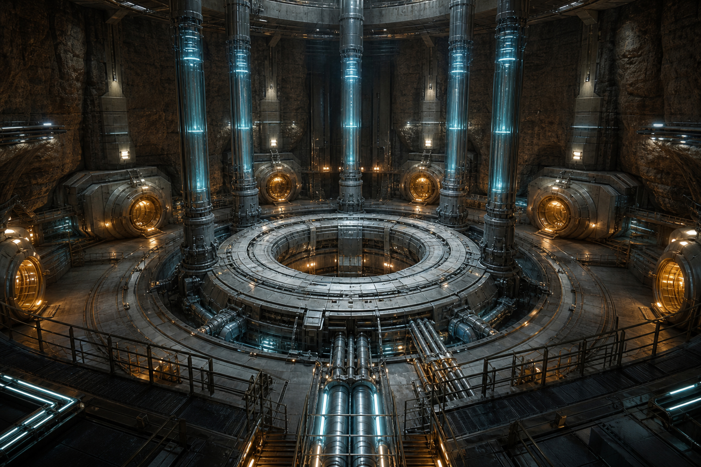
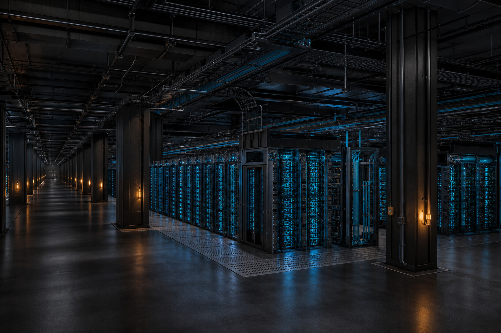
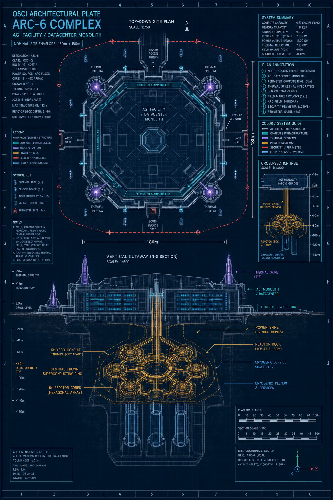

Arc-6 is an eight-sided datacenter monolith rising 220m above grade, built around a hexagonal six-core fusion deck sunk 80m into bedrock. Everything above the deck exists to keep the substrate housed inside it cold, powered, and coherent.

| Designation | ARC-6 / OSCI-Q |
| Role | AGI Host / Compute Core |
| Footprint | 180m × 180m |
| Height above grade | 220m |
| Perimeter form | Eight-sided, chamfered corners |
| Façade material | Titanium / graphite composite |
| Isolation bands | Faraday continuous |
| Reactor cores | 6, hexagonal array |
| Reactor deck depth | Z −80m |
| Total floors | 40 above grade + 4 sublevels |
| Compute capacity (peak) | 6.72 EFLOPs |
| Memory capacity | 1.34 EB |
| Storage capacity | 9.60 ZB |
| Arc Field boundary radius | 2,100m |
| Security perimeter | 3,800m |
The fusion deck is a hexagonal array of six reactor vaults — Alpha through Zeta — arranged around a central Crown: a superconducting ring that distributes power and stabilizes the Arc Field. Each vault runs magnetically confined D-T fusion today, with the site engineered for a longer transition toward aneutronic fuel.
Six YBCO conduit trunks rise from the Crown through the vertical power spine, carrying current up through the cryogenic level to the compute floors above.


Above two Faraday-isolated decks, the monolith stacks neuromorphic silicon-photonic hardware, a recursive self-improvement substrate, and holographic memory — everything Observer-3 runs on, and everything watching it run.
Racks are cooled by the same cryogenic loop feeding the reactor deck below, and every floor reports back to the Control and Safety Systems layer before anything reaches the Apex.
| Level range | Zone | Primary function |
|---|---|---|
| SL-4 → SL-1 | Sublevels | Cryogenic production, conduit origin, control rooms, emergency systems and manual overrides |
| G → FL-03 | Operational Base | Security corridor, logistics, 12-person Human Operations Center, emergency coordination |
| FL-04 → FL-10 | Compute Layer A | Neuromorphic silicon-photonic arrays, Tier-1 inference hardware |
| FL-11 → FL-18 | Compute Layer B | Recursive self-improvement substrate rows, upper Faraday boundary |
| FL-19 → FL-24 | Memory Architecture | Holographic memory banks, temporal storage and coherence management |
| FL-25 → FL-30 | Control & Safety | AGI safety co-processors, Arc Field monitoring, oversight terminals |
| FL-31 → FL-36 | Power & Thermal | YBCO terminal nodes, switchgear, thermal tower conduits |
| FL-37 → FL-40 | The Apex | Remote manipulator arrays, orbital uplink, restricted roof mechanical |
Four subsystems carry the reactor's output from plasma to substrate — and one roadmap describes where the fuel cycle is headed next.
Arc-6 produces its own He-3 rather than depending on lunar extraction or outside supply. Deuterium-deuterium reactions and lithium-6 neutron capture blankets generate tritium, which decays into He-3 through cryogenic isotope separation.
Charged particles from aneutronic reactions are decelerated across electrostatic grids operating at 1.2–1.8 MV, converting their kinetic energy straight into electrical power without a thermal cycle.
A phased roadmap moves Arc-6 from neutron-heavy D-T and D-D cycles toward D-He3 and, eventually, p-B11 — cutting neutron-induced decoherence and extending the substrate's stable operating life.
Continuous monitoring of neutron flux, cryogenic pressure, grid voltage, and Arc Field coherence feeds seven interlocked shutdown and containment procedures — including protocols written specifically for substrate anomalies.
Plate ARC-6-AP-01 — the site envelope, ring geometry, and vertical cutaway used to plan every level from the Apex down to the reactor deck.

Every failure mode at Arc-6 routes to a defined procedure — from a confinement quench to an unauthorized substrate routing request.